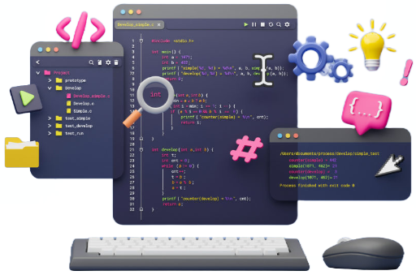

As a college student, my journey into the realm of software engineering has been an exhilarating exploration of technology, creativity, and problem-solving. From the first lines of code I wrote, I was drawn into the captivating world of software development, where every challenge offered an opportunity for innovation. This passion has led me to contemplate the exciting path that lies ahead, and I am determined to acquire a diverse set of skills and experiences that will define my future in this dynamic field.
One of my main goals is to master the art of software architecture and design. I believe that crafting robust and scalable software systems is both a science and an art. I aspire to create elegant solutions that not only address today’s challenges but also stand the test of time. This involves a deep understanding of architectural patterns, coding best practices, and the ability to optimize code for efficiency and performance. I am eager to explore the ever-evolving landscape of software development methodologies as these methodologies will equip me with the agility to adapt to changing project requirements and industry trends.
One of the most captivating aspects of software engineering is its versatility. In the coming years, I hope to delve into various specialization areas within the field. Whether it’s diving into the intricacies of artificial intelligence and machine learning, crafting interactive and responsive web applications, or developing cutting-edge mobile apps, I aim to develop expertise in select domains while maintaining a broad understanding of software development as a whole. These explorations will allow me to adapt to the ever-changing demands of the tech industry and contribute meaningfully to a range of projects.
While classroom education is invaluable, I believe that hands-on, real-world experiences are equally crucial for personal and professional growth. Collaborative projects, internships, and participation in hackathons will be integral to my journey. These experiences will not only sharpen my technical skills but also enhance my ability to communicate, collaborate, and manage projects effectively. I look forward to working with diverse teams and taking on challenging projects that push the boundaries of innovation.
In conclusion, my passion for software engineering is a driving force in my college experience and my vision for the future. The skills I aim to master and the experiences I hope to gain will not only define my career but also allow me to be a part of the transformative forces shaping our technological landscape. As I embark on this exciting journey, I eagerly anticipate the opportunities, challenges, and innovations that await me in the ever-evolving world of software engineering!